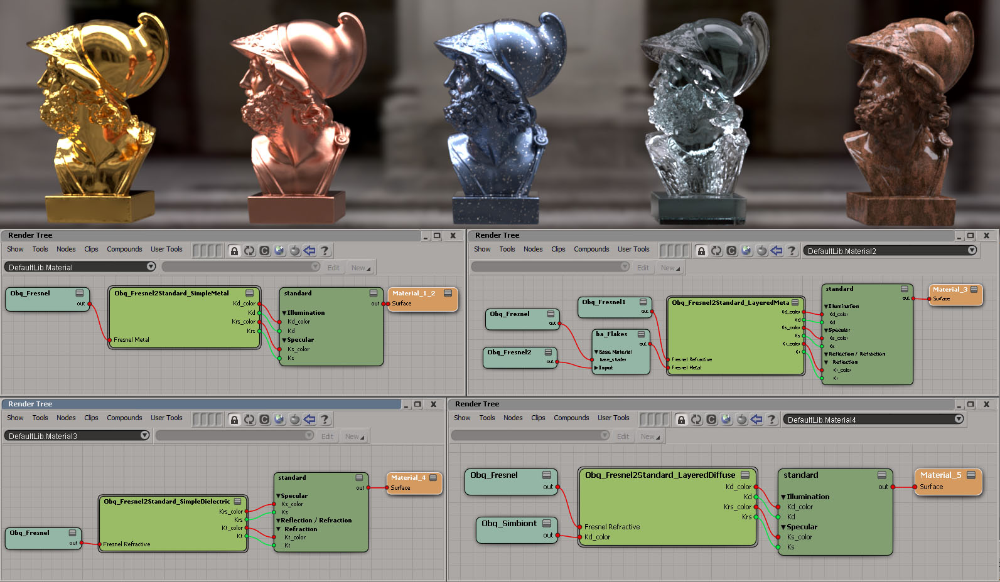

|
|
|
|
|
|
|
Obq_Fresnel
|
|
|
| Description
| Installation
| Render Tree Usage
| Adding new presets
| Copyrights
|
Category:
Texture
Shader
Family: Texture
Output:
Color
Obq_Fresnel is a texture node that
outputs proportion of light reflected/refracted from a surface
based on the refractive indices and the extinction
coefficients.
|
|
|
Settings |
|
|
| Fresnel Mode |
Different
value input mode :
- Custom :
let's you enter arbitrary values.
- Preset :
let's you choose predefined materials.
- File
: let's you load a file containing wavelengths and their respective
refractive indices and extinction coefficients, respectively n
[eta] and k. You can load comma-separated values (.csv),
tab-separated values (.txt) and pbrt's .spd.
You can get
files from websites like : http://refractiveindex.info and
http://www.filmetrics.com/refractive-index-database |
|
|
Material
presets with their values.
If you want
to add a preset, go to the "Adding a preset" section. |
|
|
|
|
File |
|
|
| Filename |
You
can browse for a ior files. While .csv and .txt contains both n and k
or only n, spds only contains one of them at a time. Gold, for example,
would have a file "Au.eta.spd" for n and a "Au.k.spd" for k. Loading
one of them will automatically load the other if it exists.
|
|
| Wavelenghts Units |
Depending
on the origin of the file, wavelenghts units will usually be nanometers
[ 360nm-830nm ] or micrometers [ 0.360um-0.830um ]. Select the
appropriate one.
A warning
might be usued if the shader thinks you selected the wrong units. |
|
|
|
|
N |
|
|
| Red, Green, Blue |
RGB
n [eta] are the real parts of the
refractive indices. There is no single specific wavelenght for red,
green or blue. It's rather a sum of weighted values. The best way to
choose values for them is to actually load the file corresponding to
that material, select "Info" verbose level in the diagnostic tab of the
Arnold render options and look at the log for the actual RGB values.
Don't forget to set the IOR of the shader too ( generally to the green
value ). |
|
|
|
|
K |
|
|
| Red, Green, Blue |
RGB
k (extinction
coefficients) are the complex part of the refractive indices. Metals
reflect light and absorb light, that's what gives the color. They are
approximately equal to 0 for non metals. Values can be found the same
way as for n. |
|
|
|
|
Equations |
|
|
| Material type |
The
fresnel implementation used for evaluation :
- Refractive :
uses equations for dielectrics. Choose this mode if the material
reflects and/or refract lights. If you want to simulate a varnished
piece of wood, for example, choose this mode and use values of the
varnish. Instead of driving the refraction scale or
color with the transmitted value, drive the diffuse scale of
the shader or premultiply the texture color with it. These equations
ignore k.
- Metals
: uses equations for metals. Choose this mode if you want to drive the
reflection or specular color of a material.
|
|
|
|
|
Options |
|
|
| Ratio of polarized Fs/Fp |
Ratio
of s- and p-polarisations. |
|
Backface
|
This
allows you to control what happens when a backface of a polygon is
intersected by a ray. This is only used when "Refractive" type is
chosen:
- Same as
Frontface : This treats backfaced polygon as frontface.
- Swap IORs
: Use this when the refracting
material is a closed volume. It swaps the ior and the media in ior.
Because it is important to know in which media you are in when
calculating these values, being in water and going into glass will not
give the same values as being in glass and going into water.
- Always White
: Returns white.
- Always Black :
Returns black.
|
|
|
|
|
Options |
|
|
| Output Refraction Color |
By
default, this shader returns the reflected portion of light. If this is
check, it will return the refracted portion of light. It's essentially
equals to 1-R except for metals (0).
|
|
| DeGamma
metals for linear workflow |
This
options should be checked for metals when using a linear
workflow, otherwise, colors might seem washed out.
Note : This
option should be on by default, but because it is new, we didn't want
to change the look of old render tree. The user should change the
default value if aware of this on line 105 of the Obq_Fresnel.spdl. |
|
|
|
|
Media In |
|
|
| Refractive Indices - n |
Same
as previous n, but this is the media in which your object lies.
Generally equals to 1, but if you're in water, for example, it would be
1.33. Ideally, this would exist and would be equal the the ray current
IOR. |
|
|
|
|
Installation |
|
|
|
|
|
Adding
New Presets |
|
|
- Get the csv of txt file from the web
or spd files from pbrt (http://www.pbrt.org).
http://www.filmetrics.com/refractive-index-database
or http://refractiveindex.info/
Load it in the shader, change verbosity from warning to info, open the
log/script window and render. The RGB values for n and k will be shown.
- On line 134 of the Obq_Fresnel.spdl, you have
the
items of the combo box of presets. Add your preset in the proper
section or in a new section and put as index the highest index + 1.
Remember this number and increment accordingly the "Value Maximum" of
the presets parameter on line 28.
- On line 401 of the Obq_Fresnel.spdl, you have
to add the case with your new preset index before the last
"Else" on line 630. Copy-paste the last "ElseIf" bloc, change the index
and the iorCoeffs array values with the ones from the log/script window.
- Save your spdl and voilà.
|
|
|
|
|
Render
Tree Usage |
|
|
Statues of Ajax : smooth gold, rough copper,
rough osmium with
silver flakes underneath a smooth acrylic layer, smooth ice and a
vegetable oil covered rosewood. The compounds are also available for
download and ease the linking process from the Obq_Fresnel to the
Standard shader.
 |
|
|
|
|
Copyrights |
|
|
Copyright (c) 2012 Marc-Antoine Desjardins,
ObliqueFX (madesjardins@obliquefx.com)
Permission is hereby granted, free of charge, to any person obtaining a
copy
of this software and associated documentation files (the "Software"),
to deal
in the Software without restriction, including without limitation the
rights
to use, copy, modify, merge, publish, distribute, sublicense, and/or
sell
copies of the Software, and to permit persons to whom the Software is
furnished to do so, subject to the following conditions:
The above copyright notice and this permission notice shall be included
in all
copies or substantial portions of the Software.
THE SOFTWARE IS PROVIDED "AS IS", WITHOUT WARRANTY OF ANY KIND, EXPRESS
OR
IMPLIED, INCLUDING BUT NOT LIMITED TO THE WARRANTIES OF
MERCHANTABILITY,
FITNESS FOR A PARTICULAR PURPOSE AND NONINFRINGEMENT. IN NO EVENT SHALL
THE AUTHORS OR COPYRIGHT HOLDERS BE LIABLE FOR ANY CLAIM, DAMAGES OR
OTHER
LIABILITY, WHETHER IN AN ACTION OF CONTRACT, TORT OR OTHERWISE, ARISING
FROM,
OUT OF OR IN CONNECTION WITH THE SOFTWARE OR THE USE OR OTHER DEALINGS
IN THE
SOFTWARE.
Licensed under the MIT license: http://www.opensource.org/licenses/mit-license.php
|
|
|
|
|
|
|